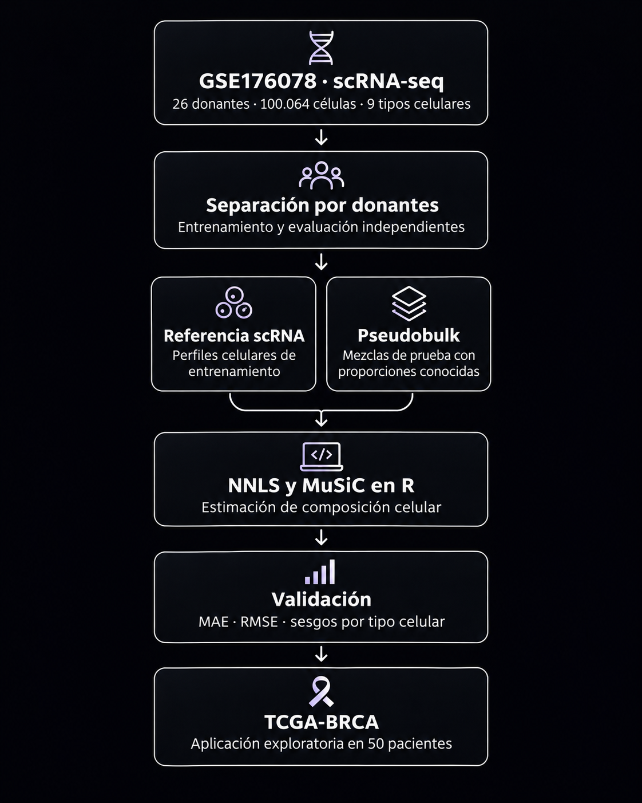

Diseño y factibilidad de un flujo reproducible para deconvolución celular de RNA-seq bulk en cáncer de mama
Bioinformática II · Entrega parcial 1 · 19 de noviembre de 2026
1. Planteamiento científico
Problema y justificación. El RNA-seq bulk mide la expresión conjunta de células tumorales, inmunitarias y estromales; por sí solo no revela cuántas células de cada población contribuyeron a la señal. En contraste, el scRNA-seq caracteriza perfiles individuales y permite obtener firmas de tipos celulares anotados. La deconvolución intenta recuperar su composición a partir de la expresión agregada, pero el resultado depende de la calidad, cobertura y representatividad de la referencia [1–3].
Pertinencia clínica. En cáncer de mama, la heterogeneidad del microambiente tumoral puede dificultar la interpretación de los perfiles bulk. Antes de relacionar proporciones estimadas con estadio patológico, corresponde comprobar que el método recupera composiciones conocidas en un escenario de prueba independiente; una asociación clínica sin esa evaluación podría reflejar sesgos de plataforma o de la referencia.
Pregunta de investigación. ¿Con qué precisión puede una referencia celular construida a partir de scRNA-seq estimar proporciones conocidas de tipos celulares en mezclas pseudobulk de donantes independientes, y es técnicamente factible aplicar ese procedimiento a tumores primarios de TCGA-BRCA?
Hipótesis (por contrastar). La deconvolución basada en perfiles de donantes de entrenamiento tendrá menor error absoluto medio (MAE) en mezclas de donantes reservados que un comparador basal que prediga la composición promedio del entrenamiento. No existen aún resultados de esta contrastación.
Objetivo general. Desarrollar y evaluar un flujo reproducible para estimar composición celular de muestras RNA-seq bulk de cáncer de mama utilizando scRNA-seq como referencia.
Objetivos específicos. (i) Caracterizar las fuentes y las cohortes; (ii) establecer una referencia con independencia por donante; (iii) generar pseudobulk con proporciones conocidas; (iv) evaluar NNLS y MuSiC con MAE, RMSE y sesgos por tipo celular frente al comparador basal; y (v) aplicar exploratoriamente el procedimiento a TCGA-BRCA tras su validación interna.
Fuentes de información y alcance ejecutado
GSE176078 / Broad SCP1039 [1]: atlas de scRNA-seq de cáncer de mama, con 26 donantes, 100.064 células, 29.733 genes y nueve categorías celulares principales. Los conteos UMI y los metadatos originales están disponibles y el QC descriptivo inicial (objetivo A) está documentado. Se decidió no aplicar filtros adicionales tras revisar criterios del atlas y distribuciones por donante/tipo celular; ello no garantiza ausencia de dobletes, contaminación ambiental ni efectos de lote. Los donantes cubren subtipos ER+ (11), HER2+ (5) y TNBC (10).
TCGA-BRCA / NCI GDC: 1.111 archivos de expresión STAR Counts de tumor primario correspondientes a 1.095 pacientes distintos. Se cuenta con metadatos, datos clínicos y una selección de 50 archivos bulk descargados e íntegros (objetivo E/01–E/05). No se ha realizado deconvolución.
Unidad y alcance. En scRNA-seq la observación es la célula, pero la unidad independiente para dividir entrenamiento/prueba es el donante. En TCGA-BRCA la unidad clínica es el paciente, asociado a un archivo tumoral primario seleccionado. Esta entrega demuestra diseño y factibilidad, no predicción validada, resultados de deconvolución ni asociaciones por estadio.
Productos verificables. Se dispone de controles de integridad MD5, resúmenes de cohorte, lectura de expresión y código versionado. La evaluación de modelos y la interpretación biológica serán etapas posteriores, separadas de esta verificación inicial.
2. Datos, cohorte y diseño metodológico
Tabla preliminar de muestras
| Variable | GSE176078 · scRNA-seq | TCGA-BRCA · bulk |
|---|---|---|
| Unidad independiente | Donante | Paciente (Case ID) |
| Donantes / pacientes | 26 | 1.095 |
| Células medidas | 100.064 | No se observan células individuales |
| Genes anotados | 29.733 | 60.660 |
| Categorías celulares | 9 principales | Proporciones por estimar |
| Archivos de expresión | ZIP 10X con conteos UMI | 1.111 STAR Counts catalogados |
| Datos utilizados | Referencia completa y QC inicial | 50 matrices del piloto |
Definición de cohorte. En TCGA-BRCA, la unidad
clínica es el paciente (Case ID) y se
elige una sola muestra/archivo de expresión por paciente para evitar
pseudorreplicación. Se prioriza la preservación OCT, luego Unknown y
finalmente FFPE, resolviendo empates mediante los identificadores de
muestra y archivo. El piloto excluye FFPE (1.093 pacientes candidatos),
selecciona 50 con set.seed(20261116) y conserva esa
selección al vincular estadio clínico. De los 1.095 pacientes, 1.069
tienen estadio patológico AJCC utilizable; el piloto tiene 1
paciente en estadio IV, por lo que no fue diseñado para
inferencia comparativa por estadio.
Representación de poblaciones de referencia. Aunque el atlas incluye nueve categorías, su cobertura no es uniforme: Normal Epithelial está anotada en 13/26 donantes, Plasmablasts en 14/26 y Cancer Epithelial en 20/26. Estos ceros describen ausencia de células capturadas/anotadas, no ausencia biológica demostrada. La partición de donantes deberá contemplar la cobertura de las categorías y documentar las que no resulten evaluables.
Flujo de análisis (diseño; pasos B–D aún pendientes)

Figura 1. Diseño previsto: referencia scRNA-seq, pseudobulk independiente, NNLS/MuSiC y aplicación exploratoria a TCGA-BRCA. Las etapas B–D aún no se han ejecutado.
3. Resultados de factibilidad, controles y reproducción
Resultados ejecutados al 17-11-2026
Acceso e integridad (E/04). Los 50 archivos del
manifiesto GDC tienen un tamaño total de 212.050.127 bytes (212,05 MB).
La comprobación en R confirmó 50/50 archivos presentes con
tamaño y MD5 correctos, y cero archivos faltantes o erróneos.
La descarga efectiva se hizo mediante gdc-client 2.3 en
PowerShell; el script de descarga automatizada se redactó posteriormente
y no se ha probado como ejecución inicial.
Lectura y QC inicial (E/05). Se leyeron 50 matrices
con conteos crudos unstranded y anotación GENCODE v36,
excluyendo filas técnicas STAR. Se identificaron 60.660 genes anotados,
52.937 con conteos positivos en al menos una muestra y una mediana de
32.180 genes detectados y 55.487.414,5 conteos
génicos por muestra. No se descartaron muestras por umbrales de
QC.
Alerta QC pendiente de revisión. En las 50 muestras,
la fracción de conteos asignada a genes protein_coding
presenta un mínimo de 78,21 %, frente a una mediana de
97,33 %. Esa muestra requiere investigar su
distribución de conteos, anotación y posibles variables técnicas;
no se excluye automáticamente por un indicador
aislado.
Compatibilidad entre plataformas. Se observaron 20.288 símbolos de genes compartidos sin duplicados dentro de cada origen (68,2 % de la referencia). Esto no constituye una armonización validada de identificadores: el bulk usa Ensembl con versión y la referencia proporciona símbolos; la conciliación de alias, duplicados y anotaciones permanece pendiente.
Validación prevista, riesgos y limitaciones
Partición y pseudobulk (plan, no ejecutado). Se predefine una separación aproximada 70/30 por donante (18 para entrenamiento y 8 para prueba, sujeta a cobertura de subtipos y categorías) con una semilla documentada. Se intentará conservar representación de ER+, HER2+ y TNBC. La selección de genes y perfiles se realizará solo en entrenamiento. Con conteos UMI crudos de donantes reservados se sumarán células para formar varias mezclas pseudobulk, registrando número de células, proporciones conocidas y tipos ausentes; sus parámetros y semilla se fijarán antes de evaluar el método.
Criterios de evaluación. Se estimarán proporciones con NNLS y, si se satisfacen las condiciones, MuSiC [2]. Se compararán contra un basal de composición promedio del entrenamiento mediante MAE, RMSE y gráficos observado–estimado por tipo; la incertidumbre se resumirá por donante, evitando tratar mezclas del mismo individuo como réplicas biológicas independientes. La prueba pseudobulk comparte plataforma con la referencia y podría sobrestimar la transferibilidad a TCGA-BRCA. En ese bulk no hay proporciones verdaderas; la asociación con estadio será observacional y exploratoria [3].
Riesgos y mitigaciones: preservación
Unknown (auditar efectos técnicos), plataformas distintas
(armonización de genes y escala de conteos), poblaciones raras o
ausentes en donantes (revisar cobertura y considerar agrupaciones
justificadas) y escasa representación de estadio IV (no hacer
comparaciones concluyentes). La ampliación futura hasta 1.093 pacientes
no FFPE queda condicionada al QC y la disponibilidad de recursos.
Entorno y trazabilidad. Windows 11, Positron, R
4.5.3; Seurat 5.6.0, SeuratObject 5.4.0, BPCells 0.3.1 y
renv.lock. Los scripts A y E/01–E/05, CSV, manifiestos,
verificaciones MD5 e informe fuente están en GitHub. El
informe se regenera con
source("scripts/00_render_informe_entrega1.R") a partir de
tablas versionadas; los datos crudos y objetos grandes se conservan
localmente. Algunas tablas públicas del GDC incluyen Case ID y
File ID; no se publican matrices de expresión ni TSV clínicos
originales. La restauración limpia de renv y la
portabilidad de BPCells aún no se han probado.
Referencias principales: [1] Wu SZ et al. (2021). Nature Genetics. https://doi.org/10.1038/s41588-021-00911-1. [2] Wang X et al. (2019). Nature Communications, 10:380. https://doi.org/10.1038/s41467-018-08023-x. [3] Tran KA et al. (2023). Nature Communications, 14:5758. https://doi.org/10.1038/s41467-023-41385-5. Datos públicos: GEO GSE176078, Broad SCP1039 y NCI GDC.